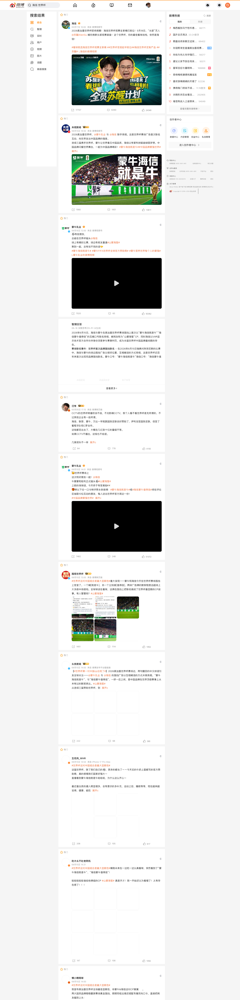
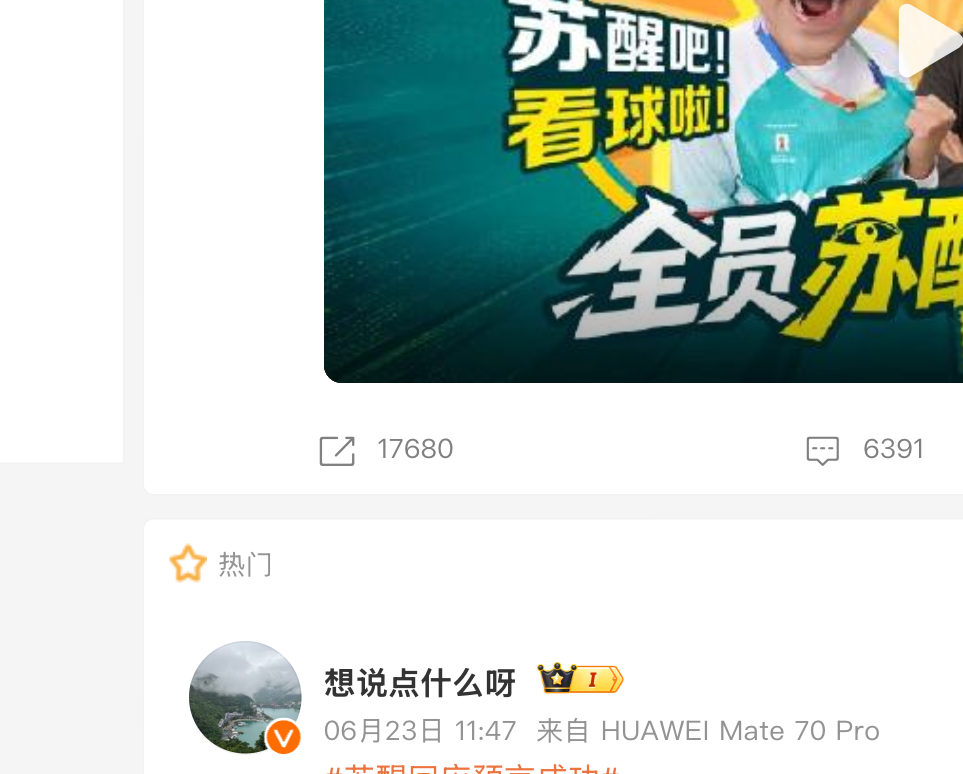

案例发生了什么

海信把 RGB-Mini LED、VAR 显示和国际转播场景绑定，让“赛事级显示”成为消费者理解画质和技术可靠性的具体证据。
它解决的策略问题
这页要回答的不是“海信：RGB-Mini LED / VAR 显示 是否参与世界杯”，而是它如何通过“FIFA 赞助 / 显示技术”回应“让“赛事标准”成为产品理解理由”这一业务问题。
资源如何变成行动
资源基础
FIFA 赞助 / 显示技术
价值转译
把“让“赛事标准”成为产品理解理由”从赛事术语翻译成用户能理解的产品、体验或情绪理由。
触点设计
赛场/转播建立权威感，内容、零售、活动或服务负责把一次看见变成多次接触。
商业承接
优先观察商品、门店、电商、会员或长期社区项目是否接住了赛事关注。
动作拆解
- 在专业赛事环境展示核心显示技术。
- 将裁判、转播与家庭大屏建立一条可信的技术链。
- 以连续三届世界杯建立长周期的海外品牌记忆。
可复用的方法硬件品牌最有效的赛事表达，是把“高规格”翻译成消费者可判断的体验标准。
传播与业务机制
传播机制
官方身份提供可信起点，但传播效率取决于是否有可被球迷复述的具体动作。
参与机制
让观众从“看见赞助商”走到观看、体验、收藏、互动或到店。
业务机制
将权益落到产品、渠道或服务节点，避免赞助只停留在品牌曝光。
沉淀机制
用长期主题、会员、数据或社区项目延长赛期之外的关系。
适用条件、风险与证据
- 需要明确权益能被调用的范围，而不是只记录赞助级别。
- 至少准备内容与商业两条承接线，防止资源只在比赛画面里出现。
- 复盘时区分赛事可见度、用户参与和实际业务结果，不能相互替代。
证据台账可将已核动作作为内部判断基础；涉及投放规模、销售结果或合作细则时，仍应以品牌、平台或权利方的一手发布为准。 当前记录：已核；素材状态：有图。
补充物料

资料与下一步
将全球赛事权益翻译为产品、体验与市场增长。 后续补充时，优先归档品牌官方发布页、视频首帧/完整片、线下执行现场、投放时间与可追溯的效果口径。